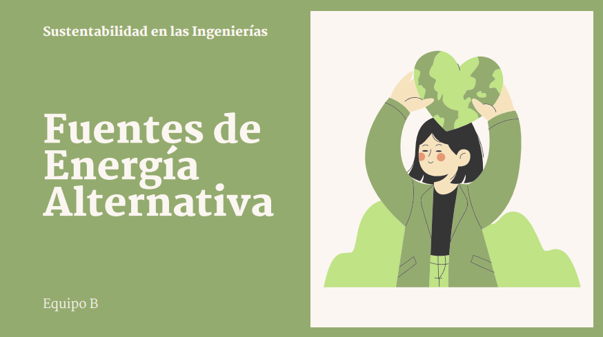

Capacitacion sobre Energias Alternativas

Tema presentado a la Comunidad
Nuestro equipo presento el tema de Energias Alternativas a la comunidad, con el fin de concientizar sobre la
importancia de adoptar fuentes de energía más limpias y sostenibles. Durante la presentación, abordamos los
diferentes tipos de energías alternativas, sus beneficios y desafíos, y su impacto en el medio ambiente. A
través de ejemplos concretos y datos relevantes sobre el uso de energías renovables en el mundo, buscamos
sensibilizar a la comunidad sobre la urgencia de transitar hacia un modelo energético más sostenible y
respetuoso con el planeta. Dicho tema fue presentado a los estudiantes de ISI de primer semestre.
Conclusiones tras la presentacion
- Miguel Arroyo
Hemos explorado las múltiples ventajas de las energías renovables y los desafíos que enfrentamos para su implementación. Sin embargo, el cambio más importante comienza en cada uno de nosotros. La educación y la concienciación son fundamentales para construir una sociedad que valore y promueva las energías limpias. Al educar a las nuevas generaciones sobre la importancia de la sostenibilidad y al fomentar una cultura de consumo responsable, podemos garantizar un futuro más limpio y próspero para todos
- Allison Navalles
Las energías renovables no solo benefician al medio ambiente, sino que también generan oportunidades económicas y sociales. La creación de empleos verdes, la reducción de la dependencia de los combustibles fósiles y la mejora de la salud pública son solo algunos de los beneficios que podemos esperar. Al invertir en energías limpias, estamos invirtiendo en nuestro futuro y en el de las generaciones venideras
- Francisco Perez
Hemos visto cómo las energías alternativas ofrecen una solución viable a los desafíos ambientales que enfrentamos. Sin embargo, para lograr una transición energética exitosa, necesitamos la colaboración de todos: gobiernos, empresas, instituciones académicas y ciudadanos. Cada uno de nosotros puede contribuir a este cambio, ya sea a través de nuestras decisiones de consumo, apoyando iniciativas locales o exigiendo políticas más ambiciosas en materia de energía.
- Veronica Rodriguez
Las energías renovables no solo son una solución ambiental, sino también una oportunidad económica sin precedentes. Al invertir en energías limpias, estamos creando empleos de calidad, impulsando la innovación tecnológica y fortaleciendo nuestras economías locales. Además, el acceso a energía limpia y asequible mejora la calidad de vida de millones de personas en todo el mundo, reduciendo la pobreza energética y promoviendo el desarrollo sostenible. Es hora de aprovechar este potencial y construir un futuro más próspero y equitativo para todos.